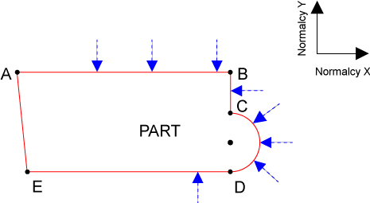

|
Was this information helpful? Yes No |
Copyright |
|
You are here: CNC Option > G-Code and M-Code Programming > Motion > Advanced Motion > Corner Rounding and Normalcy > Normalcy Motion Overview
|
|
Note: This feature applies only to dependent axes. For information about axis types, refer to Axis Type Overview. |
Some types of cutting tools must be perpendicular (normal) to the part that is being cut. Such tools typically mount to a rotational axis so that the orientation of the tool can be changed as the position of the part changes. Normalcy motion is generated from the commanded position (not feedback) of the normalcy axes.
In the normalcy mode, the controller automatically maintains the relationship between the cutting tool axis and the axes that make the normalcy plane, which requires the following two types of moves.
Normalcy motion (normalcy alignment moves and normalcy concurrent moves) only occurs during or between coordinated moves.
The following figure shows a part. The arrows show the orientation of the normalcy axis at the time that the controller is on the point where the head of the arrow touches the part. The letters A, B, C, D, and E are points on the part that are discussed in the following sections.

The controller supplies the normalcy mode, which keeps the tip of the cutting tool to the surface of the part that is being cut. To use this mode, you must specify the rotational axis of the cutting tool, (represented by the arrows in the Normalcy Motion Figure), and the axes that make up the normalcy plane (refer to NormalcyX and NormalcyY in the Normalcy Motion Figure). Use the NORMALCY AXES command to specify these three axes.
Use the NORMALCY OFF command to deactivate normalcy. Use the NORMALCY LEFT or NORMALCY RIGHT commands to activate normalcy.
|
NOTE: You must program the normalcy axis in degrees and configure the rollover to be 360°. Configure the following parameters from Configuration Manager.
|
|
Note: The homing cycle disables normalcy motion. Refer to Homing Overview for more information. |
|
Note: In VELOCITY ON mode, large accelerations on the normalcy axis can occur between LINEAR moves and arc moves that are tangent (for example, between move C→D and D→E in the Normalcy Motion Figure). These accelerations occur because the normalcy must change velocity instantly (for example, in move C→D in the figure the normalcy axis is moving, but in move D→E, the normalcy axis is not moving). To prevent these accelerations, set the DependentCoordinatedAccelLimit parameter to the same value as the DefaultRampRate parameter value on the Normalcy axis. |
|
Was this information helpful? Yes No |
Copyright |
 2001-
2001-